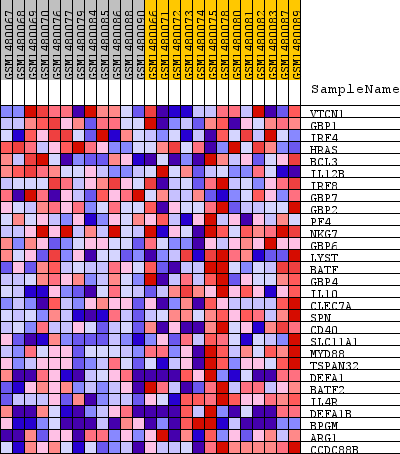
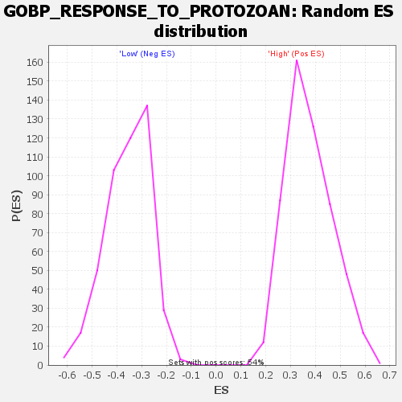

Profile of the Running ES Score & Positions of GeneSet Members on the Rank Ordered List
| Dataset | WG6v3.MRPL3.cls#High_versus_Low.MRPL3.cls#High_versus_Low_repos |
| Phenotype | MRPL3.cls#High_versus_Low_repos |
| Upregulated in class | Low |
| GeneSet | GOBP_RESPONSE_TO_PROTOZOAN |
| Enrichment Score (ES) | -0.6857223 |
| Normalized Enrichment Score (NES) | -1.9304136 |
| Nominal p-value | 0.0 |
| FDR q-value | 0.020777846 |
| FWER p-Value | 0.234 |
| SYMBOL | TITLE | RANK IN GENE LIST | RANK METRIC SCORE | RUNNING ES | CORE ENRICHMENT | |
|---|---|---|---|---|---|---|
| 1 | VTCN1 | VTCN1 | 909 | 0.111 | 0.0087 | No |
| 2 | GBP1 | GBP1 | 2555 | 0.049 | -0.0517 | No |
| 3 | IRF4 | IRF4 | 3547 | 0.034 | -0.0857 | No |
| 4 | HRAS | HRAS | 3892 | 0.030 | -0.0884 | No |
| 5 | BCL3 | BCL3 | 6091 | 0.013 | -0.1954 | No |
| 6 | IL12B | IL12B | 6197 | 0.012 | -0.1948 | No |
| 7 | IRF8 | IRF8 | 6364 | 0.011 | -0.1977 | No |
| 8 | GBP7 | GBP7 | 7290 | 0.007 | -0.2420 | No |
| 9 | GBP2 | GBP2 | 7377 | 0.007 | -0.2431 | No |
| 10 | PF4 | PF4 | 10373 | -0.004 | -0.3954 | No |
| 11 | NKG7 | NKG7 | 12309 | -0.012 | -0.4893 | No |
| 12 | GBP6 | GBP6 | 13089 | -0.016 | -0.5214 | No |
| 13 | LYST | LYST | 15755 | -0.038 | -0.6399 | No |
| 14 | BATF | BATF | 16316 | -0.045 | -0.6462 | No |
| 15 | GBP4 | GBP4 | 17084 | -0.057 | -0.6572 | Yes |
| 16 | IL10 | IL10 | 17186 | -0.059 | -0.6330 | Yes |
| 17 | CLEC7A | CLEC7A | 17260 | -0.060 | -0.6065 | Yes |
| 18 | SPN | SPN | 17634 | -0.068 | -0.5919 | Yes |
| 19 | CD40 | CD40 | 17842 | -0.073 | -0.5660 | Yes |
| 20 | SLC11A1 | SLC11A1 | 17961 | -0.077 | -0.5337 | Yes |
| 21 | MYD88 | MYD88 | 18196 | -0.084 | -0.5036 | Yes |
| 22 | TSPAN32 | TSPAN32 | 18566 | -0.102 | -0.4719 | Yes |
| 23 | DEFA1 | DEFA1 | 18617 | -0.104 | -0.4222 | Yes |
| 24 | BATF2 | BATF2 | 18648 | -0.106 | -0.3705 | Yes |
| 25 | IL4R | IL4R | 18659 | -0.107 | -0.3175 | Yes |
| 26 | DEFA1B | DEFA1B | 18961 | -0.130 | -0.2678 | Yes |
| 27 | BPGM | BPGM | 19105 | -0.147 | -0.2017 | Yes |
| 28 | ARG1 | ARG1 | 19351 | -0.207 | -0.1108 | Yes |
| 29 | CCDC88B | CCDC88B | 19383 | -0.229 | 0.0020 | Yes |

